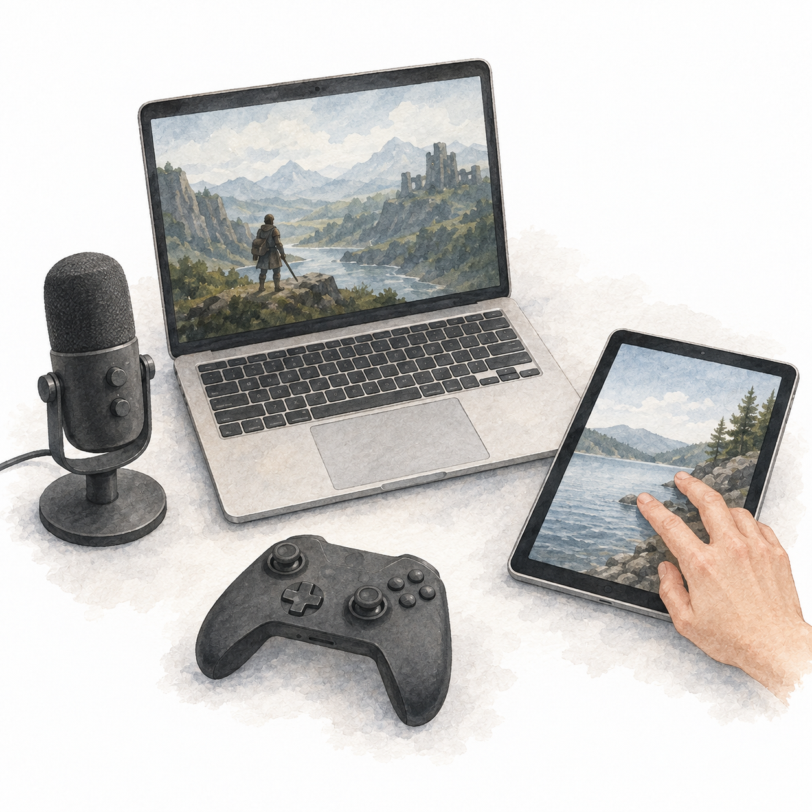

Tools are special things. They are not naturally occurring things. They are things that are physically transformed, transformed for utility, utility of people by people.
Computers are the most general tool we have ever built.
In fact, in theory, they are as general in their capabilities as any computing machine can be. A universal capability.
We use this universality to get our day to day things done and aspire to more. We do that by interacting with them physically, through touch, sight, and sound. (Not yet through smell and taste.)
While the theoretical capabilities remain the same, from the Analytical Engine of the 1830s to today’s most advanced Apple MacBook, there is a world of difference in how we interact with these tools.

Our first interaction with computers looked similar to operating any heavy machinery.
Changing thousands of cables and rotors manually every time we wanted these machines to do a different task.
These changes in wiring and rotors were nothing but instructions: sets of physical transformations encoded as abstract rules.
Soon we started storing programs. Instead of changing the settings for every program, we only had to tell the machine which program to run, and the machine would set up its own settings. Memory.
This still required writing programs offline on paper or punch cards, then loading them into the computer as a batch.

With time sharing, several people could use the same computer through their own terminals. The machine shared its processing time between them, responding to each person in turn.
Early terminals printed the computer’s responses on paper. As CRT screens took their place, the keyboard and screen became a familiar way to use a computer.
We were still pressing physical buttons, but now those buttons entered letters, numbers, and symbols. Software interpreted what we typed as instructions for the machine.
We could write a program, run it, see the output, and edit it at the same terminal. Preparing the instructions and using the computer became part of the same activity.
One of my fondest memories is writing Logo programs when I was eight years old. Forward 100. Right 90. Words I typed became lines on the screen. I was over the moon when I discovered that my version of Logo could also play music, with different letters producing different tones. Magical!

But why type an instruction to move something when we could point to it and move it ourselves?
The mouse gave our hand a position on the screen. Move it across the desk, and a pointer moved with it. Click to select. Hold and drag to move.
Douglas Engelbart conceived the mouse, and Bill English built its first prototype in the 1960s. Work at Xerox PARC helped bring the mouse and graphical interfaces together. Later, computers like the Macintosh brought these ideas to a wider audience.
Files became icons. Directories became folders. Programs appeared in windows. Instead of remembering what to type, we could see things on the screen and choose what to do with them. A graphical user interface.
We were still giving the machine instructions. But now moving our hand, pointing, and clicking could express them. To draw a line, I no longer had to type Forward 100. I could drag across the screen and watch the line follow.

Today, we move between several ways of interacting with computers, often without thinking about it.
On a trackpad, moving a finger moves the pointer. Two fingers scroll. On a touchscreen, we touch the thing itself. Tap a photograph to open it. Spread two fingers to make it bigger. Multi touch lets the machine read more than one point of contact at a time.
We can use our voice too. Speak, and our words appear as text. Ask the computer to play music, and it plays. Sound becomes another way to give an instruction.
In games, a thumb on a stick can steer a car. A button can make a character jump. The controller vibrates when we hit something. Our movements change what happens on the screen, and the machine responds through pictures, sound, and touch.
These ways of interacting have not simply replaced one another. We still type, point, and click. We also swipe, pinch, speak, and play. The same computer, many ways to tell it what we want to do.

But through all these changes, something stayed the same. For most everyday tasks, we were choosing from actions someone had already defined for us.
A button had a function. A menu had a list of options. Even in a game like GTA Vice City, where it feels like we can do anything, the controls have specific meanings. Move, jump, enter a car. These can combine into a world of possibilities, but what each control can do is still defined by the game.
Now, when I use AI, I can say, “Hmm, I’m not sure about that.”
What button is that? I have not said what is wrong. I have not picked an alternative. I have only expressed doubt. And the computer can use the context to ask what I mean, explain its answer, or try another approach.
We could already type freely into documents, search boxes, and programs. Earlier systems could respond to language too. What feels different with today’s AI is how much of what we say can become part of the instruction, without someone having to design a separate option for it.
“Keep this part.” “Make it less formal.” “Actually, I meant something else.” I can explain what I want in my own words, even while I am still figuring it out.
This does not mean the computer can do anything, or that it will understand me correctly every time. But I am no longer limited to the choices visible on the screen. The interface can work with what I mean, not just which option I select. To me, that is profound.

And if I can explain what I want in my own words, why must I always type them?
There is a reason writing fitted computers so well. Computers needed precise instructions, and written symbols gave us a way to specify them. Recognising speech was another technical challenge. But even recognising every word would not, by itself, tell the machine what we meant.
We moved from codes and symbols to instructions that looked more like English. Forward 100. Right 90. The words became familiar, but the precision remained. Forward was not an invitation to work out my intention. It was a specific command, with a specific meaning defined by the program.
That is the distinction I care about. Recognising the words is one thing. Interpreting what I mean is another. “Hmm, I’m not sure about that” does not name a precise action. The computer has to use the context to work out how to respond.
Earlier systems explored this too. What today’s AI makes more practical is using everyday language across a much wider range of tasks. I can hesitate, correct myself, or leave something unsaid. The computer can infer an instruction, or ask me to clarify, rather than require an exact command.
That is why voice becomes interesting to me. Not just because the computer can hear my words, but because it can do more with their meaning. Speaking, for many of us, is already how we explain what we want. We do not have to turn every thought into a carefully prepared instruction first.
I think a significant share of our interactions will move towards voice. Not all of them. Typing is often better when we need precision, privacy, quiet, or time to work through what we want to say. A screen is still useful when we need to compare, inspect, or make something visual.
But asking a question, talking through an idea, or asking for something to be done does not always need a screen. We could speak to a computer, hear its response, and bring out a screen when there is something worth looking at.
That opens up room for computers without a screen at their centre. Devices we can hear and talk to, without having to look down and find the right button. They would still need to make it clear when they are listening, and ask before acting when getting it wrong matters.
These are the two changes I am interested in. We can express what we want beyond a set of predefined options. And increasingly, we can do that by speaking. The screen becomes something we use when we need it, not the place where every interaction has to begin.